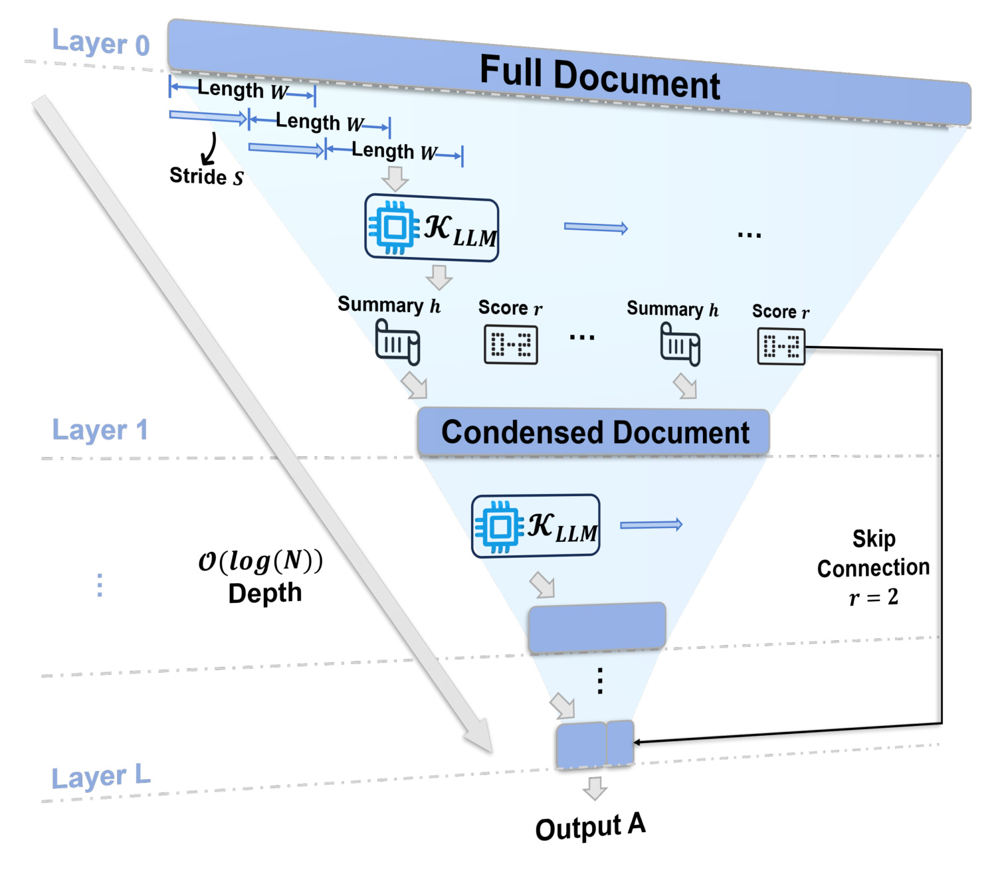
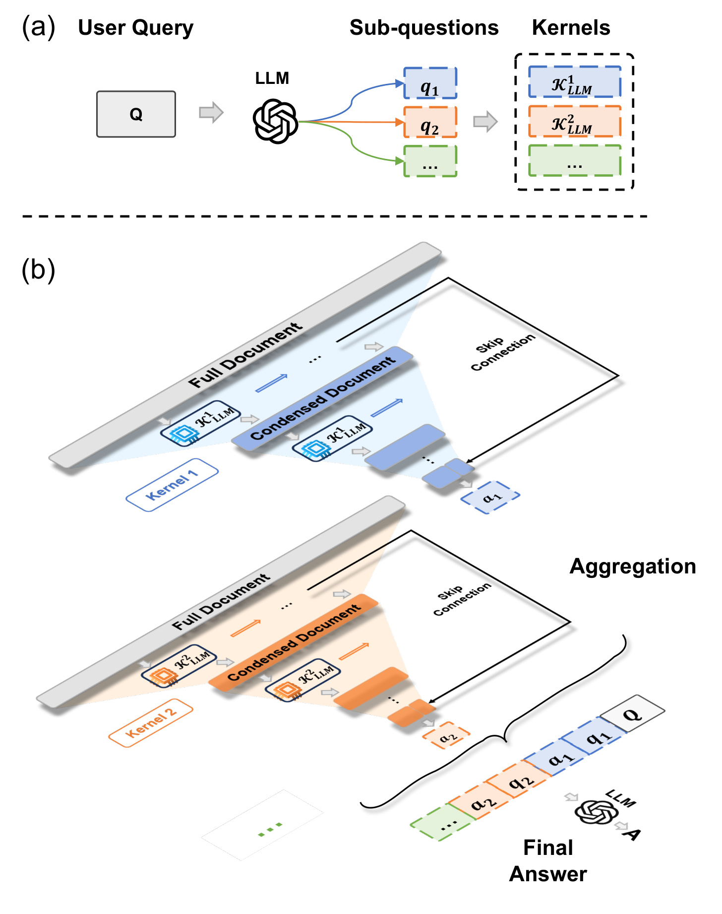
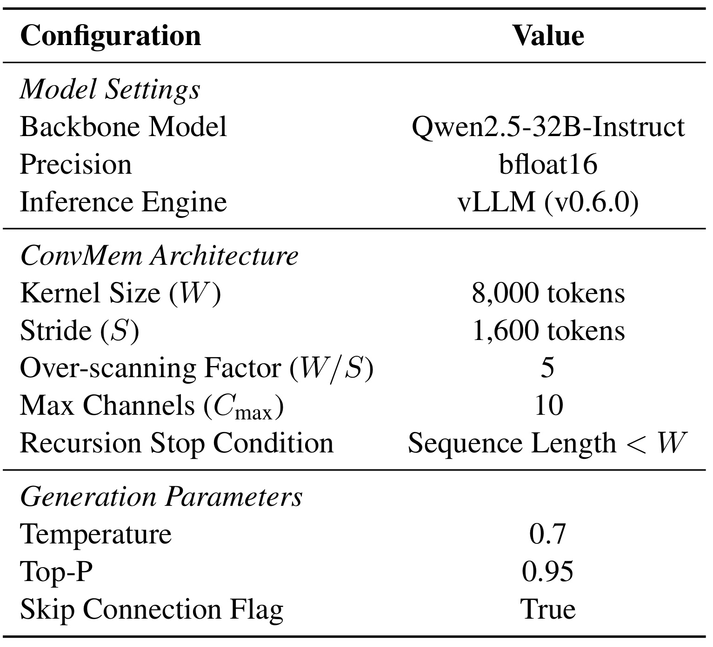
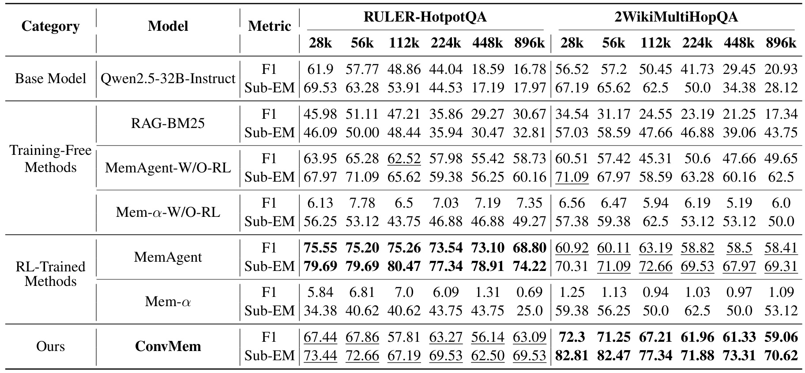
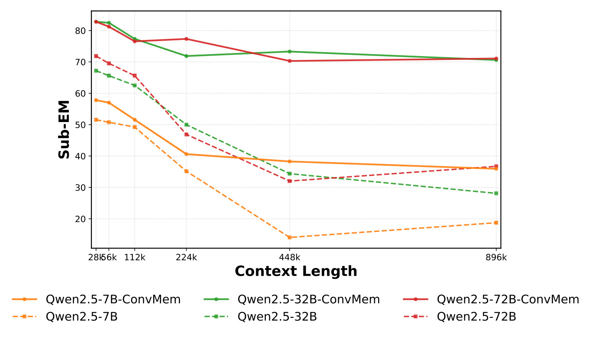
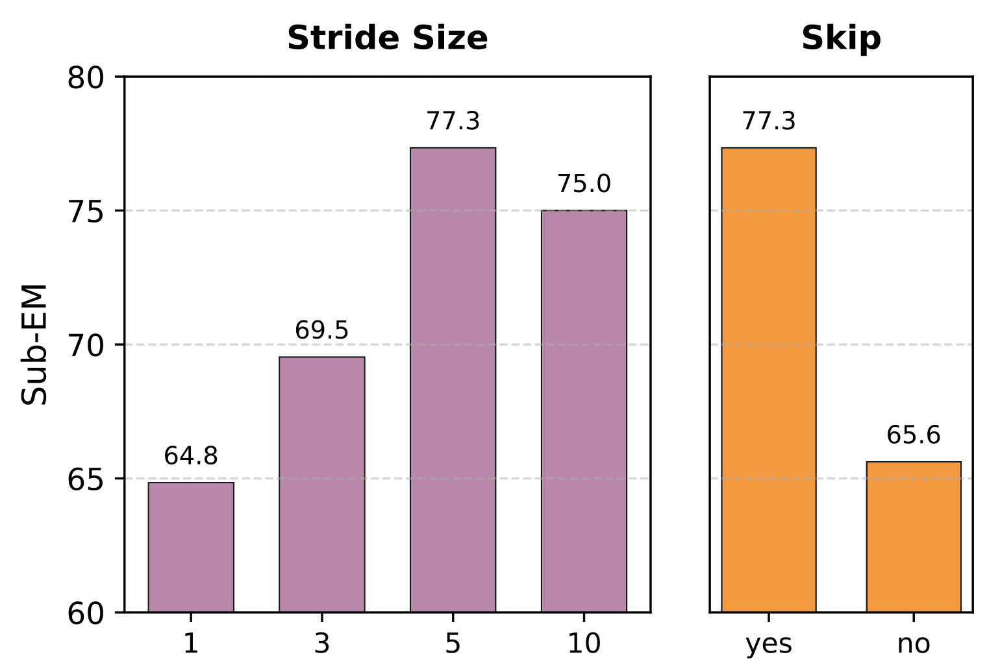
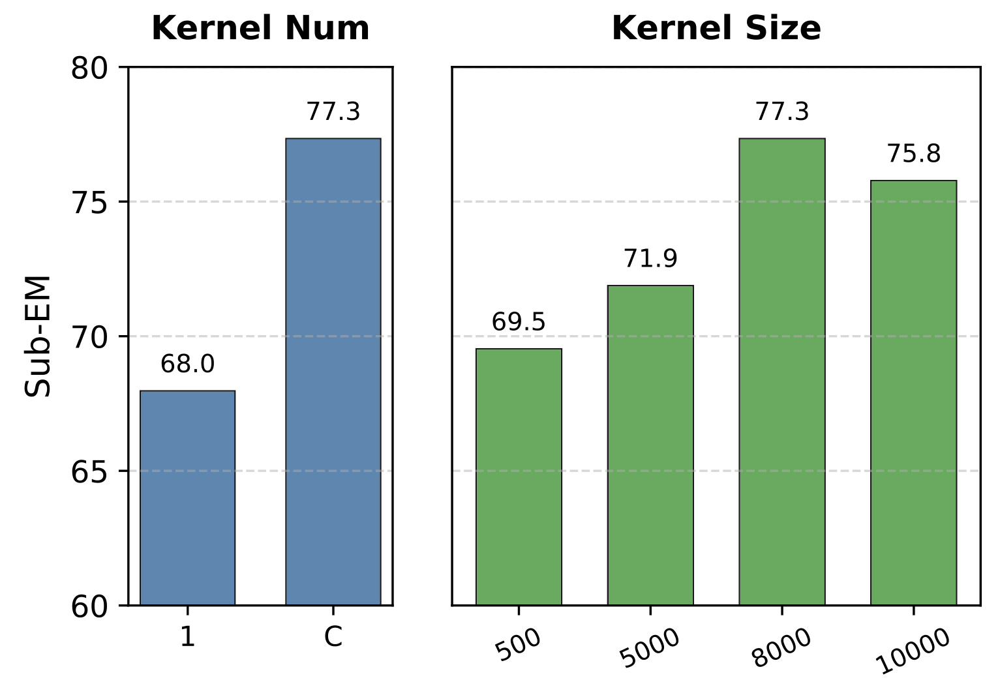
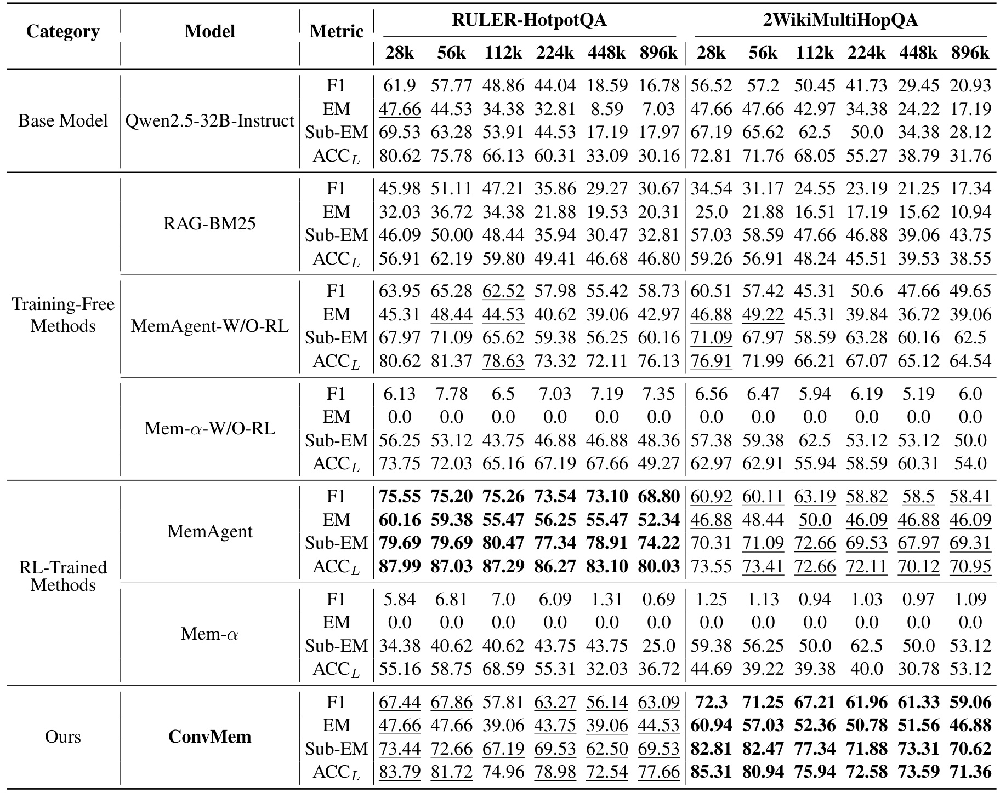

中科院自动化所-ConvMem：把超长文本记忆组织成可并行的证据树
ConvMem 研究如何用冻结的大模型处理超出单次上下文窗口的多跳问答。第一作者 Hongming Zhang 及作者团队来自中国科学院自动化研究所；作者还包括 Zhaozhen Gu、Fengshuo Bai、Ming Hao、Qingyang Zhang、Yuanyuan Wang、Shiyang Tang、Yanna Wang 和 Bo Xu。论文于 2026 年 9 月 9 日提交 arXiv v1，本笔记于 2026 年 9 月 11 日核验，唯一论文入口为 ConvMem: Convolutional Memory for Long-Context Reasoning。未核验到本文独立公开代码或项目入口。
大模型的固定上下文窗口限制了超长文本推理；逐段读取并反复更新固定大小记忆的路线虽然扩展了可处理长度，却引入严格的顺序依赖和较高延迟，而依赖强化学习优化记忆策略又增加训练成本，并可能对特定数据集过拟合。
1. 背景和问题
1.1 长上下文真正困难的地方是证据关系
本文面对的输入是一份非常长的文本和一个需要根据其中证据回答的问题。文本可能由大量文档段落组成，答案所需事实分布在不同位置，而且单个片段未必直接包含最终答案。例如，问题先描述某部电影里的角色，再询问饰演者后来担任的政府职务。电影段落只告诉我们角色和演员的对应关系，人物传记才包含政府职务；两段之间可能隔着数百个干扰文档。系统既要找到两条事实，也要在同一个实体上把它们连接起来。只识别关键词、只检出一段看起来最相关的材料，或者只保留每个片段的主题，都可能错过真正的推理链。这种任务比从全文找到一个重复出现的字符串更接近证据组织问题，也是作者选择多跳问答而非单一检索任务的原因。
直接扩大大模型的上下文窗口可以让更多文本进入同一次前向计算，但并不保证模型稳定使用全部内容。引言指出标准自注意力的计算量随输入长度平方增长，还存在中间信息容易被忽略的现象。对一份接近百万词元的材料，名义上能够接收输入，与能够在合理资源下完成细粒度跨段推理，是两个不同的条件。位置编码外推、稀疏注意力以及缓存压缩分别改善位置范围、访问模式或显存负担，却未直接替用户决定哪些远距离证据应当联合保留。ConvMem 选择在冻结模型外部改造读取和聚合流程，沿用现成模型的局部理解能力，以许多可管理的窗口代替一个庞大的单次上下文。
检索增强生成是另一种压缩输入的方法：先从材料中检索相关片段，再让模型回答。本文采用的代表是 BM25 检索，把排序靠前的片段装入模型有效上下文。这条路线的优点是不用阅读每一个片段，但它要求检索器在尚未完成推理之前就找到关键证据。多跳问题中的第二跳实体可能只有在第一跳被读懂后才出现；其文档与原问题的表面词汇重合很少，也就容易被一次检索漏掉。作者据此强调全量扫描的意义。不过，这个批评在本文实验中对应的是具体的 BM25 基线，不能直接推广到全部迭代检索、查询改写、图检索或者更强的混合检索系统；这些替代路线并未在主表中得到系统比较。
1.2 顺序记忆为什么会遗忘，以及并行能解决多少
顺序记忆代理把长文本当作连续流，读取一段后，用新段落和已有记忆更新一个受限长度的摘要。它把输入处理分解成线性的局部调用，避免一次性容纳全文，但后一步必须等待前一步的记忆输出。因此，即使有很多空闲计算资源，也不能任意并行这些状态更新；提早启动后续步骤，就缺少它应当依赖的历史状态。更隐蔽的问题是早期事实是否值得保留，常常要在读到后面的关系之后才能判断。把某位演员的外交职务从记忆中删除，在当时可能是合理的压缩，却会在后文揭示演员与电影角色关系后变成不可逆的错误。遗忘不是单纯的窗口边界问题，而是有限记忆对未来相关性的预测失败。
论文试图通过改变信息流拓扑减少这种损失：同一层的所有片段各自产生局部摘要，再汇总成下一层输入；多条子问题通道分别保留相关证据，直至最后才联合回答。这样，一段早期文本不需要经过与后面每一个干扰段落的连续竞争才能到达最终答案。它只经过所在分支及少数上层聚合。不过，树形组织并不等于信息无损：叶节点仍然要决定保留哪些细节，上层仍会压缩摘要。作者额外引入重叠扫描和原文旁路，正是因为更短的路径只能减轻累积误差，无法保证第一次局部抽取就正确。把该方法理解成“换一种摘要树就解决记忆”会遗漏两个对结果影响很大的部件。
强化学习在这里承担的是记忆策略优化，通过任务奖励学习哪些内容值得保存、怎样更新或者最终如何作答。作者认为，这种训练可能让模型适应特定数据集的标签和表达习惯，而不完全依赖当前输入。在一个附录例子中，上下文出现的姓名与数据集标签中的拼写不同，训练后的代理输出了标签中的形式。这值得检查，但从科学解释上，观察到标签倾向尚不能唯一判定其来源是强化学习记忆、底座预训练先验、提示差异还是评测实现。本文确实提供了分布外任务和具体案例，支持对这种风险保持警惕；它没有给出足以证明所有强化学习记忆代理都会如此的因果隔离实验。免训练也只表示本框架不增加参数更新，底座模型依然包含既有知识和偏差。
1.3 卷积类比的价值与任务范围
“卷积”在这里是组织方式的类比。传统卷积核做数值运算，ConvMem 的核是一个带查询和指令的冻结语言模型，输入与输出都是文本。窗口定义一次能够看到的局部范围，步长决定相邻窗口重叠多少，通道代表不同子问题，层数代表递归压缩的次数，跳跃连接把被判为关键的原始文本送到最终阶段。这些概念把几个原本分散的工程选择放到同一个结构里讨论：提高覆盖率需要重复读取，保留精度需要绕过摘要，分离语义线索需要不同提示。它没有学习一组卷积权重，也没有把词元变成图像特征，因此不能照搬图像卷积的平移等变性或训练性质来解释结果。
对大模型系统研究，这个工作可借鉴的是在模型之外显式组织证据流，让局部理解、保真原文和跨问题合成分别承担明确职责。对推荐与搜索方向，较直接的关联在于长材料理解、解释生成和跨文档证据汇总，而非在线点击率预估或召回模型本身。若用它整理一批产品文档或用户授权的长历史，查询条件会改变每个通道的摘要内容，因而这些中间结果不是天然可复用的通用用户向量；是否适合低延迟、高频查询，还需要另做成本实验。本文验证的是合成长上下文中的多跳问答，未报告推荐数据集、线上用户指标或生产服务收益，这些范围必须与方法启发区分清楚。
2. 方法
2.1 语义卷积核与局部摘要
按照原文第 2.1 至 2.2 节，设全文为 $D=\{t_1,\ldots,t_N\}$，查询为 $Q$，窗口容量为 $W$，步长为 $S$。一个核不独自持有全局可变记忆，而是在当前查询条件下处理某个局部片段。其输入是片段、子问题和提示，输出包括压缩后的相关信息与离散相关性等级。局部调用之间不依赖彼此刚刚生成的摘要，是后续并行成立的前提；冻结模型只是被反复调用，整个框架没有新增训练损失，也没有在推理期间更新参数。原文公式（1）为：
符号解释：$K_{\mathrm{LLM}}$ 是由冻结模型和指令 $p$ 定义的语义核，$x$ 是当前文本窗口，$q$ 是本通道关注的问题，$h$ 是相关信息摘要，$r\in\{0,1,2\}$ 是相关性等级。零表示完全无关，一表示可能相关的背景，二表示含有直接证据或答案。摘要承担压缩，等级承担证据路由，二者不可混为同一个置信度分数。附录实际给出了相关性判断和摘要的不同提示模板，因此该元组描述的是逻辑接口，并不证明一次模型调用就同时完成两项工作。所有窗口结果按原始顺序拼接，得到原文公式（2）：
符号解释：$M$ 是切片数量，$h_i$ 和 $r_i$ 来自第 $i$ 个窗口，$\bigoplus$ 表示文本依序串接，$H$ 是全局摘要序列，$R$ 保存相应等级。这里的全局只表示覆盖了所有窗口，并不表示已经完成所有跨窗口逻辑推理。附录的摘要提示要求保留与问题相关的全部细节，无相关信息时返回指定的空信息说明；相关性提示则倾向保守，仅在非常确定无关时才输出零。结构化输出解析失败会退回 $r=1$，减少因为格式错误直接丢证据的风险，但也会让更多噪声进入摘要路径。此时还不能把该片段提升成有原文旁路的关键证据，因为旁路门槛仍是二。
2.2 重叠步长与原文跳跃连接
原文第 2.3.1 节首先处理切分边界。当 $S\lt W$ 时，相邻窗口共享 $W-S$ 个词元，在某个窗口边缘的信息可以在另一个窗口更靠中间的位置重新被读取。实验设为 $W=8000$、$S=1600$，使多数内部词元大约被扫描五次，序列两端不必恰好达到这一次数。重叠同时提供不同局部语境和多次生成机会，因此改善可能来自边界完整性，也可能来自重复读取的额外预算。作者随后加入关键原文旁路：只在输入层把等级为二的原始片段收集进缓冲区，让精确名字、日期等细节绕过上层压缩。公式（3）表达为：
符号解释：$B$ 是保留原文的残余缓冲区，$x_i$ 是原始窗口，$\mathrm{Score}$ 对应语义核的等级判断，集合并表示把关键窗口加入缓冲区。它保留的是原始片段，而非再生成的短句，因此最后回答能对照高保真内容。公式没有给出缓冲区的硬容量、重叠片段去重算法或溢出裁剪规则；这些实现选择直接决定最终提示能否装下全部材料。跳跃连接保护的是已经被识别出来的证据：如果局部模型把真正关键的段落误判为零或一，旁路不能事后恢复它。它也不自动保证模型引用原文正确，只是把可供核对的信息送到了答案生成阶段。

图中从上到下依次是原文、第一轮压缩后的文本、进一步摘要以及最终输出。最上方几条长度相同但起点不同的蓝色扫描箭头表示重叠窗口，它们共享核的行为定义，却可以独立执行。中间每次出现的摘要与分数对应前述两个输出：摘要沿主干向下流动，最高等级则使对应原文沿右侧黑色连线直达末端。图中变窄的梯形表达文本逐层压缩，不应理解成模型隐层向量的维度变化；所有中间表示仍然是模型可读的文字。由此可见，原文旁路和摘要树分别保留细节与汇总信息，最终答案会同时利用两条路径。若只读蓝色主干而忽略右边的连接，就会把这套架构错误简化成普通递归摘要。
左侧标注的对数深度解释的是信息经过多少个依赖层级。它无法说明每层实际有多少请求、更无法说明请求队列已经被硬件完全并行处理。重叠窗口在改善召回的同时，会使输入层产生更多片段和重复事实；原文旁路还可能携带多个高度相似的窗口。高层摘要提示要求避免重复事实，但这并不等价于已经定义了无损去重。因而读图时需要同时关注主干是否收缩、旁路是否膨胀：前者决定递归何时结束，后者决定最后一次回答需要消化多少原文。论文没有将两种长度随层数变化的测量曲线画出来，图提供了可实现的结构，保真程度和成本仍应由后续实验独立衡量。原文还限定旁路在输入层收集，因此上层发现某条摘要很关键时，并没有同等明确的回溯原文规则；若早期压缩已经删掉实体属性，上层只能利用剩下的文字推理。
2.3 多核通道与层次并行推理
原文第 2.3.3 节把复杂查询拆成 $C$ 个子问题，每个子问题定义一个独立语义核，对同一全文分别提取相关信息。其逻辑输出由公式（4）表示：
符号解释：$c$ 标识通道，$q^{(c)}$ 是该通道的子问题，$K^{(c)}$ 由同一底座模型配合不同问题形成，$H^{(c)}$ 是对应的摘要文本。原式沿用卷积符号而只展示摘要部分，等级和缓冲区也应扩展成通道独立状态。它的语义分离来自提示和存储路径隔离，并非不同参数学习出了严格正交的特征。附录拆题提示要求用尽可能少的子问题覆盖原问题，也允许抽取关键词；若问题依赖一个尚未识别的中间实体，如何写出有足够召回能力的子问题会成为首要难点。多个通道都基于错误前提并行扫描，只会更快地产生一致但不完整的证据。

图的上半部分说明查询先经过模型拆解，形成不同颜色的子问题及语义核；下半部分则把每个颜色扩展为一棵独立证据树。不同通道扫描的是同一份原文，而不是先把文档按主题互斥分配出去。因此，一个包含多个实体关系的片段可以在不同通道中被保留，摘要却分别围绕各自问题组织。各树内部都有原文旁路，在生成子答案前把压缩信息与关键原文重新汇合。末端不是对多个答案投票，而是把子问题、子答案连同原问题交给模型进行逻辑合成。这样的职责分离有助于降低不同线索抢占同一摘要空间的干扰，但最后的模型仍需要检查子答案之间的实体是否一致、关系方向是否匹配以及有没有遗漏前提。
图中彩色通道彼此独立，不表示语义上天然独立。比如先找电影导演再找出生地，第二步的对象实际上依赖第一步发现的姓名；拆题提示必须让出生地通道保留足够广的线索，否则它可能在扫描时就过滤掉正确人物。作者将这视为对底座拆解能力的依赖，而没有增加一个通过反馈重开原文检索的纠错环节。与顺序记忆相比，树结构减少了中间状态对后续所有输入的依赖，也把初始规划和最后合成的重要性提高了。框架没有训练阶段与推理阶段之间的分支切换，图中所有环节都是推理时调用；所谓免训练收益来自省去针对记忆策略的额外优化，而不是省去这些重复扫描和合成请求。
随后第 2.4 节对每个通道递归处理：输入层先切原文，上层则切上一层摘要串接后的文本。当该文本仍超过窗口容量，就继续增加一层。原文公式（5）与随后未编号的长度近似分别是：
符号解释：$l$ 是递归层号，$H^{(l-1,c)}$ 是上一层该通道的摘要串，$H^{(l,c)}$ 是本层重新扫描并压缩后的文本。这里保留与输入层相同的按问题抽取原则，但隐藏层提示强调聚合多个记忆片段、避免重复，并保留修正和澄清信息。停止条件是中间文本长度能够落入一个窗口。作者给出的典型深度为，最长约十二万八千词元时两到三层、接近一百万时三到四层，实际取决于压缩效果；这些是配置说明，不是所有查询都严格具有相同深度的证明。
符号解释：$N_0$ 是输入长度，$N_l$ 是第 $l$ 层摘要串长度，$\alpha$ 是作者用来描述平均缩短比例的压缩系数。该近似要成立，需要把重叠扫描后多份摘要串接造成的扩张也计入有效压缩率；若把它仅理解为一个窗口输出除以输入的比例，就可能低估总长度。尤其五倍扫描会产生彼此重叠的证据，模型不充分去重时，上层未必按同一比例收缩。因此，对数层数依赖持续有效压缩这一前提，原文并未给出对任意文本和任意模型都成立的收敛保证。
符号解释：$L$ 是最后一层，$B^{(c)}$ 是该通道从输入层保留的原文缓冲区，$a^{(c)}$ 是子答案，$\oplus$ 表示拼接输入。公式（6）让模型同时看到汇总线索和未经改写的直接证据，再回答单个子问题。附录子答案提示要求保留与后续问题有关的细节，在记忆无相关信息时返回空答案标记。这里没有把全部子答案提前混入每个通道，也没有让摘要取代所有原文，因此它能保留较精确的名称和属性；但如果原文缓冲区过长，最终调用的窗口预算仍是实际限制。
符号解释：$A$ 是最终答案，$Q$ 是原问题，其余部分是所有子问题与子答案的有序配对。公式（7）对应最终合成，提示要求明确原问题目标，尽量直接从依赖信息抽取答案，并避免冗余解释。这个输出约束与实验中对冗长回答的批评有关：答复长度会显著影响字符串指标，所以既要看证据组织，也要承认不同基线的回答格式可能参与了得分差异。框架仍然依赖模型完成最后的推理，不能因为中间证据齐全，就把最终关系拼接视为一个不会犯错的确定性操作。
符号解释：$T_{\mathrm{latency}}$ 是作者讨论的理想并行延迟，$N$ 是原文长度，公式（8）强调同层窗口和跨通道操作可并行，依赖链长度随树深度增长。这不是实测墙钟延迟曲线，也不是总计算量从线性变成对数。原文首层约需按步长覆盖全文，每个通道还会重复处理；硬件并发有限、模型解码耗时、任务调度和最后聚合都可能成为瓶颈。理论拓扑优势值得保留，但在论文没有提供固定设备数下的完整延迟与词元账单时，不能据此承诺百万上下文与短上下文耗时相当。
3. 实验结果
3.1 数据、指标与运行设置
作者使用两个合成长上下文多跳问答任务，每个任务覆盖二万八千到八十九万六千词元的六档长度。RULER-HotpotQA 沿用 MemAgent 的构造协议，在相关证据段落外加入干扰文档，因此对按该分布训练的 MemAgent 是分布内测试。附录还说明原构造有两次尝试的筛选过程，用来去掉底座只靠参数知识就能稳定答对的问题。新构造的 RULER-2WikiMultiHopQA 以另一套维基多跳语料为来源，保留多跳逻辑并注入噪声，作者将其作为 MemAgent 未在记忆策略训练中见过的分布外设置。这里“未见过”指该任务分布相对记忆策略训练，不能推出底座预训练从未见过相关维基知识。
主比较统一采用 Qwen2.5-32B-Instruct，包含直接输入的基座、BM25 检索、无强化学习的 MemAgent 和 Mem-α，以及训练后的两种记忆代理；另有七十亿与七百二十亿参数骨干用于扩展性观察。F1 衡量答案词元重合的精确率与召回率平衡，EM 要求规范化后的严格匹配，Sub-EM 放宽为答案和参考文本之间的包含关系，ACCL 则用大模型评委判断准确性与完整性。四种指标对长回答、姓名别名和拼写差异的反应不同，不能任选一个最有利的指标代表全部推理能力。主文重点报告 F1 和 Sub-EM，完整表格额外提供 EM 与评委分。

表中三组配置分别是模型、ConvMem 架构和生成参数。模型组给出三百二十亿参数骨干、脑浮点精度和推理引擎版本；架构组给出八千词元窗口、一千六百步长、五倍扫描、通道上限和递归停止条件；生成组采用温度零点七、核采样阈值零点九五，并启用旁路。附录硬件说明是配备八十吉字节显存的 A800 集群，用异步调度把独立窗口组成批次送入推理引擎。这些信息支持方法确实存在可并发实现，但表里没有给出集群卡数、每请求的有效并发、吞吐、墙钟时间或峰值显存，因而无法只根据这张表重建相同资源条件下的性能预算。
一处必须保留的冲突是：表中最大通道数写作十，而附录 B.2 的文字描述写作五，并称实际常见为两个到四个子问题。二者对简单查询或许不会产生差异，对复杂查询则可能使请求数和最终合成输入翻倍，不能当成无关紧要的排版细节。复现时应记录究竟采用哪一处设定并分别测试，而不是擅自认定某一个是作者真实运行值。另外，停止条件只约束拼接后的摘要长度，未明确把旁路原文一并计入该判断；配置表也没有规定摘要最大输出长度和旁路去重策略。生成具有随机性，却未在主要图表中配套给出重复运行方差。因此，这张表提供了可运行的起点，离完全确定的复现实验仍有具体缺口。由于温度并非零，同一窗口的等级判断与摘要措辞可能随抽样改变，过扫描的收益也可能部分来自多次尝试。记录随机种子、重复次数和结构化输出解析失败率，才能区分结构设计的稳定效果与某次生成带来的偶然变化。
3.2 主结果：免训练优势存在明确例外

表格左半是 HotpotQA，右半是 2WikiMultiHopQA，每个数据集由短到长排列六个上下文长度。每个模型各有 F1 和 Sub-EM 两行，行方向比较同一模型的长度退化，列方向比较同一输入长度下的方法效果。最明显的变化是直接基座在长文本下大幅下降：八十九万六千词元时，两个数据集 F1 分别只有 16.78 和 20.93，而 ConvMem 对应为 63.09 和 59.06。这个差距说明，把任务拆到可处理窗口再组织证据在本测试上非常有帮助，但直接基座与多轮扫描流程的计算预算并不相同，差值不能解释为单次调用能力提升。
更接近的免训练对照是无强化学习的 MemAgent。在最长档，ConvMem 的 HotpotQA F1 比 58.73 高 4.36 分，2Wiki 的 F1 比 49.65 高 9.41 分；Sub-EM 分别由 60.16 到 69.53、由 62.50 到 70.62。跨长度观察，2Wiki 六档 F1 都高于该对照，短档优势较明显，最长档依然保留收益。HotpotQA 则不能概括为每个指标每个长度都领先：十一万二千词元时，ConvMem F1 为 57.81，低于对照的 62.52，差 4.71 分，但同列 Sub-EM 为 67.19，高于 65.62。这说明答案内容覆盖与输出形式可能同时变化，不能把摘要中的总体优势原样扩写成无例外的全面胜出。
训练后的 MemAgent 在 HotpotQA 六档 F1 和 Sub-EM 都领先 ConvMem，最长档 F1 仍有 68.80，而 ConvMem 是 63.09；二者在较短档的差距更大。因此论文的有效结论应当是免训练结构在不少设置下具有竞争力，并在本文分布外任务上更好，而不是消除了强化学习的收益。在 2Wiki 上，ConvMem 确实在全部六档 F1 超过 MemAgent，但最长档只是 59.06 对 58.41，绝对差 0.65 分；相应 Sub-EM 也仅为 70.62 对 69.31。没有置信区间与更多重复运行时，不能把这一小差值描述成显著压倒或模型崩溃。分布内外绝对得分的下降还受到两个任务本身难度不同的影响，应优先在同一数据集、同一长度内比较模型。
BM25 在两套任务的最长档 F1 只有 30.67 和 17.34，说明本设置下单次词法检索后回答较难覆盖完整证据链；但这不能区分检索器召回不足、片段拼接顺序、模型处理方式和回答提示的贡献。主表没有显示相同总词元预算的更强检索或反复查询基线，也没有记录每种方法最终看到多少原文。因此，比较最能支持的是整套系统的端到端效果，不能从表中反推出层次结构、重复扫描、多通道各自的净贡献。后面的消融提供局部证据，但也仍需结合计算预算来读。
3.3 跨骨干扩展：规模不是唯一变量

图的横轴是上下文长度，纵轴是 Sub-EM；同一颜色对应同一骨干规模，实线是加入 ConvMem，虚线是直接骨干。三种颜色的实线均高于自身对应虚线，尤其在长上下文区间，直接输入曲线下滑更明显。这给出了模型无需针对该架构重新训练也能获益的证据。三百二十亿和七百二十亿模型的 ConvMem 曲线都维持在较高区域，七十亿模型加入框架后仍有较大差距，说明外部证据组织可以改善上下文使用，却没有抹平局部抽取、拆题与合成能力随骨干规模变化的限制。
从图上还能看到，较大的两个模型曲线并非在所有长度保持固定顺序；三百二十亿骨干在个别长档与七百二十亿相近或略高。这不宜被解释成小模型普遍更好，因为论文没有报告这些点的误差条，也没有固定推理成本进行大小模型比较。更稳妥的读取是：架构收益跨越了同一个模型家族中的多个规模，而非只在三百二十亿模型的单点成立。图中较短的两个长度刻度很接近，视觉空间不均匀，判断变化应依据标签而非折线倾角。它证明的扩展是这一家族内的经验兼容性，并未测试其他模型家族、不同语言或其他长上下文任务；若据此部署，仍需检查新底座的结构化输出能力和局部证据保留质量。
3.4 重复扫描和旁路：额外预算换来了什么

左面板虽然标题写作步长大小，横轴的一、三、五、十分别对应原文讨论的过扫描因子，也就是窗口容量除以步长，而不是一、三、五、十个词元的步长。纵轴是 Sub-EM，柱顶数值从 64.8、69.5 到 77.3，继续增加到十倍扫描时回落为 75.0。五倍相对单次扫描高 12.5 分，说明让证据在不同局部视野里多次出现确实有利于这个消融设置；十倍没有进一步改善，则说明覆盖并非越密越好，额外重复或噪声也可能损害聚合。作者把这种形状解释为边界完整性和局部信号的平衡，这与机制一致，但没有单独测量每个边界证据被漏掉的比例。
右面板比较是否启用原文跳跃连接，有旁路是 77.3，没有是 65.6，差 11.7 分。这个差距支持“摘要可能丢失实体细节，需要原文保真路径”的设计，不过移除旁路也会改变最终答案生成可见的总输入量，因此它尚未排除单纯增加上下文证据预算的解释。两边的消融都使用相同的最终指标，却没有在图中展示总请求数、输入输出词元数或运行时间；五倍扫描的最佳得分不能同时称为成本最优。图中文字所说的最佳平衡，是本组候选设置中的准确率观察。若工程上需要选择步长，应该把这张准确率曲线与固定硬件下的词元、队列延迟曲线放在一起，而不是直接把五倍扫描作为所有任务的默认最优值。
从可靠性角度，这个图还提示不同失败点应分别诊断。缩小步长解决的是相邻窗口不同视野下的召回，旁路解决的是已经识别出的高价值原文在压缩中被改写或删减。若拆题本身遗漏了一条必要语义关系，两种机制都可能无效；如果相关性判断过于宽松，则它们又可能共同放大噪声。论文采用保守相关性判断来降低漏召回，因此未来复现时应同时看关键证据召回率与旁路文本膨胀率，才能确认得分增长发生在期望的环节。
3.5 多核和窗口大小：语义粒度的两种控制

左图比较一个通道与动态多通道，Sub-EM 从 68.0 增加到 77.3，绝对提升 9.3 分。横轴的字母表示根据查询拆解得到的通道数量，不能把它当作某个固定整数，更不能与附录存在冲突的最大通道数混同。这个结果支持将多跳问题中的不同线索分开放入摘要流，使它们不必在单一受限记忆里持续竞争。但多通道也意味着同一原文被不同提示反复阅读，所以增益包含更丰富的抽取视角和更高调用预算。若想证明收益主要来自语义分离，应当增加等数量但不拆题的重复扫描对照，或者固定总词元预算；原图没有提供这样的控制。
右图保持方法大框架，改变一次读取的窗口长度，五百、五千、八千和一万词元对应得分 69.5、71.9、77.3、75.8。非常短的窗口会把原本完整的人物关系或事件语境拆碎，局部摘要难以知道哪些内容该组合；窗口过大则增加干扰材料，可能降低信号密度。八千是所试四个候选中的最佳点，并不是经连续优化得到的普适常数。图中未给误差范围，八千与一万的差只有 1.5 分，因此适合把它视为调参线索而不是严格的性能定理。窗口变化若伴随步长或总扫描量改变，也会混入成本和覆盖差异；复现必须明确哪些参数保持固定，才有资格对窗口本身的作用作更细判断。
这两组消融合在一起表明，框架不是只靠树形拓扑：语义线索怎样分组、局部窗口看多宽，都明显影响最终结果。一个通道保留过多线索会互相干扰，过多通道又可能造成重复和错误拆解；窗口太小损害语义完整，太大则降低局部聚焦。作者选出的参数组合在这套任务上合理，但它建立在底座能遵循保细节、去冗余和简短回答等提示的基础上。因此，迁移到新的问答类型时，优先检查各通道证据是否完整，再追求把窗口数与深度压到最小，会更容易定位真实失败原因。
3.6 完整指标、标签问题与过拟合论证

完整表在主表的 F1 与 Sub-EM 之外增加 EM 和 ACCL，最值得注意的是 Mem-α 的指标分离。它在多个设置里的 F1 仅个位数甚至不到一分、EM 全为零，但 Sub-EM 和评委分却没有同步归零。例如训练后的 Mem-α 在 2Wiki 最长档 F1 为 1.09，Sub-EM 为 53.12。这种形状不宜被直接解释为几乎完全不会推理：作者指出回答过长会降低词元精确率并破坏严格匹配，而较宽松的包含式指标仍可能认出答案。另一方面，长文本包含正确名称也不保证它给出了唯一、无矛盾的回答，Sub-EM 的宽松性同样可能高估质量。把这些模型与具有简洁最终回答模板的 ConvMem 对比，应先统一答案提取和规范化策略，再分析记忆能力本身。
ConvMem 的四指标也并不处处相互印证。在 HotpotQA 十一万二千档，它的 EM 为 39.06、ACCL 为 74.96，无强化学习 MemAgent 对应 44.53 和 78.63，与 F1 落后相同，而 Sub-EM 的方向相反。这排除了“只要看一个宽松指标就能判定整体更好”的简单读法。另一个需核验的具体单元格是无强化学习 Mem-α 在 HotpotQA 最长档的 Sub-EM：主表写 49.27，完整表写 48.36，完整表对应 ACCL 恰为 49.27。本文保留两处原值并标注不一致，不替作者认定是否抄错列。这不改变核心 ConvMem 数值，但意味着若后续重新计算跨模型均值或制作图表，应先向作者确认版本。
附录用若干实例解释不同指标的含义。答案只写姓名称呼而标签包含中间名时，严格匹配可能不给分；正确姓名后面附带大量说明时，F1 因冗余词而下降；缩写与机构全称语义相同，却未必存在字符串包含关系，模型评委可能更能识别。但评委也需要公开具体模型、判断重复性与人为核验口径。附录评分提示使用零至十分，表格以类似百分制数值展示，正文没有充分展开聚合和换算细节。还有一个更具体的问题：附录把省略中间名的姓名视为 Sub-EM 可接受，可两个字符串未必是严格的连续子串关系，因此复现不能只照自然语言名称写一个简单包含判断就声称与原结果等价。
关于顺序遗忘，附录列出的人物与电影案例很有解释力：人物传记位于较早的文档，出演角色的关联文档出现在后面，固定大小记忆可能在知道关联前就删除政府职务。另一个例子是某集动画的客串演员与其弟弟的关系，早期传记提供兄弟关系，后期节目段落才告诉模型谁是客串者。这些案例具体展示了“后来才知道前面哪条细节重要”的结构，也解释为什么多通道和原文旁路可能有帮助。但它们没有统计不同错误类型的频率，也没有给出对应内部记忆状态的完整追踪，因而适合作为机制示例，不适合单独估计全量失败归因比例。
关于参数先验，作者强调电影人姓名的错标案例：上下文写的是 Lev Yilmaz，标签写作 Levni Yilmaz，训练代理输出后者，而 ConvMem 输出前者。该例说明按参考字符串计分可能奖励不忠于当前上下文的回答，却不能仅凭一次输出断言强化学习是唯一成因。专辑合作者案例同样存在问题目标的歧义：多个歌曲都属于该专辑，参考答案只列其中一首的作者，输出另一首的更多合作者未必等价于无依据幻觉。附录还有将“国家”与“县”混淆的问题，上下文只给县人口却要求国家人口，严格按材料回答就可能无法得出标签。它们共同说明，判断真实推理前要先检查题目、支持证据和参考答案是否一致；宽松指标能够缓解表述差异，却无法自动修复缺证据或错标签。
3.7 效率证据的实际边界
本文没有提供实测延迟表、不同显卡数下的扩展曲线、每问题词元消耗分布或者吞吐对照。它提供的是可并行拓扑、推理基础设施说明和准确率结果。按首层窗口数量做粗略工程估算，固定通道数时，每个通道扫描原文的总输入量大约与五倍原文长度同阶；若常见两到四个通道同时工作，首层就会重复阅读更多文本，尚未计入相关性判断、摘要生成、上层聚合与最后回答。这个估算是在解释预算趋势，不是论文测得的调用账单。作者在局限节也明确承认总计算成本高于线性扫描方法，因而不能把免训练、短依赖链、低总成本写成同一个收益。
一个更可检验的效率主张应当固定硬件数量和并发限制，分别记录首层任务数、每层输入输出长度、最长等待时间、最终原文缓冲区规模和总耗时，再与顺序记忆比较。若设备不足，很多同层片段仍会分批运行，树的对数深度并不能消除总工作量；若设备充足，短依赖链才有机会转化为端到端延迟优势。本文的价值在于展示这种机会及其准确率潜力，尚不足以给出生产容量规划所需的数值。对实际迁移，最应补齐的是这一资源条件下的质量与延迟折中，而不是进一步重复理论复杂度口号。
4. 总结
4.1 如何评价这项工作
ConvMem 最有价值的贡献，是把冻结大模型的局部阅读组织成一套结构清楚、能够检查中间证据的推理流程。它把三个常被混在一起的问题拆开处理：通过重叠窗口提高发现证据的机会，通过原文旁路保留细粒度事实，通过子问题通道减少不同线索在同一摘要中的竞争，再用层次压缩限制每一步输入长度。实验说明这一组合在合成长上下文多跳问答中确实有效，特别是在本文 2Wiki 分布外设置上表现较好。我的判断是，它适合作为“如何用已有模型组织长材料”的结构基线，足以支持进一步复现，但还不足以证明树形记忆必然优于所有顺序记忆或训练策略。
它的证据链也提供了重要的阅读提醒：一个方法在摘要里被概括为整体领先，主表仍可能有长度和指标上的例外；一个基线的 F1 极低，完整指标却可能显示它的主要问题是输出过长；一个看似证明幻觉的样例，也可能同时暴露题目或标签歧义。保留这些不整齐之处不会削弱笔记的价值，反而能帮助后续实验把模型机制、评分方法和数据质量分开。如果未来只复制论文中的最佳数字而不统一输出格式或核查数据，那么得到不同结果时将很难判断究竟是实现错误，还是原本就在比较不同的任务条件。
4.2 局限与下一步验证
需要保留的局限有四类。第一，总词元与调用量较大，五倍扫描还会随通道数增长，缺少固定资源条件下的实测延迟，无法据对数依赖深度承诺服务性能。第二，拆题质量决定每个通道看什么，错误前提可能传入整棵树，当前框架缺少明确的失败反馈与重新读取机制。第三，相关性等级和原文缓冲区管理尚有实现缺口，旁路可能漏掉未被识别的证据，也可能因重复内容增长而再次触及窗口上限。第四，评估范围集中于两个合成多跳问答任务，输出格式、错标签、评委设置以及通道上限的文表冲突使结果解释和完全复现仍有不确定性。这四项分别影响成本、召回、最终保真和外部有效性，不能仅用“更强底座或更多扫描”一并解决。
后续最值得做的第一项工作，是固定同一底座、答案模板和总输入输出词元预算，比较树形记忆、顺序记忆和迭代检索；这能判断结构改造在排除额外预算之后还有多少独立收益。第二项是建立证据级诊断集，把目标事实放在窗口边缘、正文中部及后来才揭示关系的位置，记录首次抽取、每层压缩和旁路中的保留率；这样才能验证论文提出的边界截断与顺序遗忘机制，而不只是复现最终得分。第三项是同时记录固定卡数下的时延、吞吐、峰值显存和缓冲区长度，画出扫描因子与通道数的质量成本曲线，让配置选择有可执行的依据。
在这些比较前，还应先确认通道上限到底采用五还是十、两张结果表中的不一致单元格如何更正，以及 Sub-EM 与评委分的准确实现。对于有复杂实体关系的长文任务，可以先复现作者完整设置，再逐项移除重复扫描、原文旁路和通道拆解；对于目标是快速回答的应用，则应把代价预算前置，避免把高质量但大量重复阅读的流程直接当成在线默认路径。本文留下的方向很明确：值得继续研究的是如何在有限算力中把关键证据更稳定地送到答案，而每一种并行和保真机制都需要对应的成本记录与失败诊断来验证。